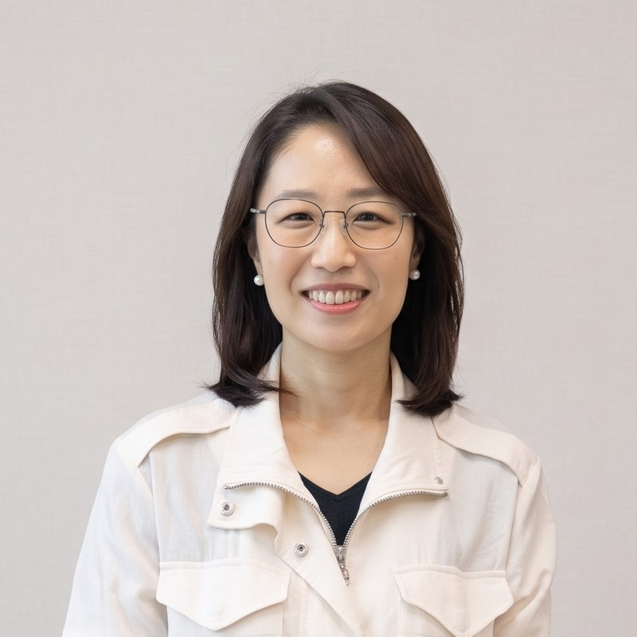

Advancing measurement science through collaborations around the world.
Director

Hyo Jeong Shin, Ph.D. 신효정
Associate Professor, Graduate School of Education, Sogang University
Dr. Shin directs MindScale. Her research concerns the application of artificial intelligence
to educational measurement and evaluation — automated scoring, automatic item generation,
adaptive test design, and the psychometrics of international large-scale assessment.
She joined Sogang University in 2022 after seven years at Educational Testing Service, most
recently as Senior Measurement Scientist, where she co-led psychometric operations for PISA.
She was promoted to Associate Professor on .
She is the first Korean member of the OECD's PISA Technical Advisory Group, chairs Sogang's
interdisciplinary AI Behavioral Studies program, and served as Registration Chair for the
Festival of Learning 2026 in Seoul. She received Sogang University's Excellence in Research Award in 2023 and 2024,
and its Excellence in Teaching Award in 2024.
AI-Convergence Educational Design and Management, Graduate School of Education, Sogang University
Automatic item generation and LLM-based translation of educational content. Lead author of STAIR-AIG (BEA 2025) and co-inventor on a 2025 patent filing.
Research fellows
Fellows and affiliated researchers
Doctoral students and Ph.D.-holding researchers who collaborate with the lab on specific
projects.
SL
Seewoo Li 이시우
Research Fellow
Doctoral student, University of California, Los Angeles (UCLA)
Item response modeling for continuous and sparse polytomous data (Psychometrika, 2025) and prompt-based automatic item generation. Co-inventor on a 2024 patent filing.
YK
Yeonwho Kim 김연후
Research Fellow
Ph.D. in Educational Measurement, Seoul National University · Hongik University Science High School
Adaptive testing and the correction of accuracy-rate bias in adaptively collected data. Co-inventor on a 2024 patent filing.
JA
Ji Yeong Ahn 안지영
Research Fellow
Doctoral student, Yonsei University
Educational big data and learner typologies in elementary mathematics.
NN
Nara Nam 남나라
Research Fellow
Ph.D. in Educational Measurement, Seoul National University
Psychometric modeling for large-scale assessment.
Undergraduate researchers
Student-led work
AIED 2026, main track
Buwon Hong, Eun Shim, and Heesoo Ko wrote
“I’m not stuck – I’m learning: Operationalizing self-efficacy trajectories
in large-scale AI learning environments” out of the undergraduate capstone course
Understanding Big Data and Its Educational Applications. It was accepted to the AIED 2026
main track — a venue where main-track acceptance is hard for doctoral students at
well-known universities. A second team from the same course presented at an international
conference in July 2026.
MindScale takes on master's and doctoral students through the Graduate School of Education and
the interdisciplinary AI Behavioral Studies program at Sogang University, and regularly works with
undergraduates through capstone courses.
If you are interested, email Dr. Shin with a short statement of what draws you to measurement,
your CV, and any coursework or projects involving statistics, programming, or assessment. There is
no expectation that you already know psychometrics — there is an expectation that you want
to.